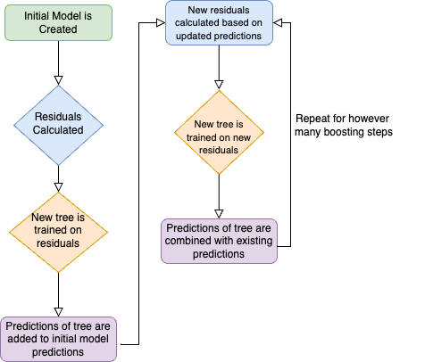

Gradient Boosting
Introduction
Gradient boosting involves repeatedly training a model on its own residuals. Over time, the model (considered a weak learner) improves its predictions, because it is training on both the train data and the results of previous predictions. First, the model is fit to the training data. Then, the model's predictions are subtracted from the actual predictor values. A second model is then fit to the training data and the residuals. This process is repeated for n steps. Finally, the model predicts the test data.
Process
Our goal was to create an efficient Gradient Boosting model that implemented our previously written Locally Weighted Regression (Lowess) class. Locally Weighted Regression uses the distance between data points to find trends within specific neighborhoods of data. Then, we compared our model to the current standard (XGBoost). We used mean squared error to compare the two models.
-
We created the
GradientBoosterclass. This class takes two models: the first model, trained on just the training data, and the residuals model, trained on the residuals of the first model. For n boosting steps, the GradientBooster class will fit models, predict based on the training data, and calculate the residuals. When called to predict data, the class will use its most recently trained model to predict the test data. You can see our GradientBooster class here! The model we used within the GradientBooster class was Lowess (locally weighted linear regression), you can see our model here! - The GradientBooster class acts as a model, so we used it alongside k-fold cross-validation to predict concrete strength using the concrete dataset. We evaluated our model with mean squared error, using three different scalers. The three scalers we used were MinMaxScaler, StandardScaler, and QuantileScaler. For each possible scaler, we used k-fold cross-validation to ensure a standard of comparison.
-
We implemented the
xgboostpackage to act as a comparison, using the same data and methods otherwise. We used mean squared error and k-fold cross-validation to measure the effectiveness of the package. You can see our implementation in this notebook.
Conclusions
We were able to create a gradient boosting model that iterates over a given number of boosting steps to fit a model. This model predicts new data based on its previously trained data. Our best MSE for our gradient booster with two lowess models was about 32, using a quantile scaler. We used 3 gradient boosting steps to accomplish this. XGBoost was still the better model using a quantile scaler, with a MSE of about 16.